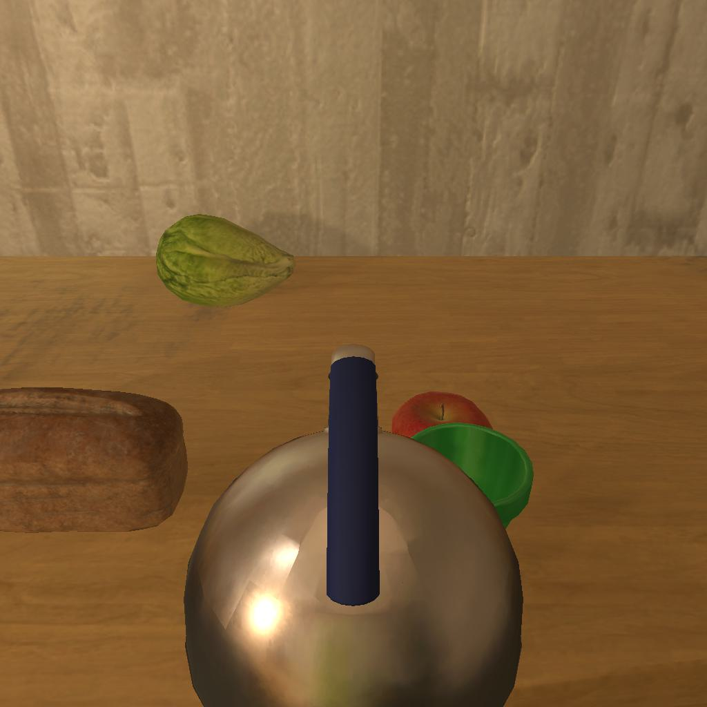

---------------------------------------------------------task: 26---------------------------------------------------------
--------------------------------------------------------------------------------------------------------------------------------------------------------------------
--------------------------------------------------------------------------------------------------------------------------------------------------------------------
Step:--------------------------------------------------------------------------10-------------------------------------------------------------------------------
----------------------------------------
VLM Prompt:
Image1:
Image2:
**Instruction**
1. Analyze the provided images to identify all visible household objects and compare the difference between images (e.h. whether the object is opened or not and taken on hand or not), focusing on those relevant to the task description "find two kettle and put them in cabinet."
2. Use the analysis of images and the task hint "The agent must find an object of the desired type, pick it up, find the correct location to place it, put it down there, then look for another object of the desired type, pick it up, return to previous location, and put it down there with the other object." to answer the question: what is the most reasonable action in the choices for the task description "find two kettle and put them in cabinet"?
3. Decide and write the answer using the template: The answer is: (i): , where i is the real number. If there is no desired object in images, search every place based on **Initial Observation** to find the object. And if no one is exactly correct, choose a similar answer.
**Initial Observation**
You are in the middle of a room. Looking quickly around you, you can see countertop (1), coffeemachine (1), cabinet (1-4), drawer (1-8), sink (1), sinkbasin (1), garbagecan (1), fridge (1), microwave (1), dresser (1), sidetable (1)
**Answer Choices**
(1): go to coffeemachine 1
(2): go to cabinet 1
(3): go to cabinet 2
(4): go to drawer 1
(5): go to sink 1
(6): go to sinkbasin 1
(7): go to cabinet 3
(8): go to garbagecan 1
(9): go to cabinet 4
(10): go to drawer 2
(11): go to fridge 1
(12): go to microwave 1
(13): go to dresser 1
(14): go to sidetable 1
(15): go to drawer 3
(16): go to drawer 4
(17): go to drawer 5
(18): go to drawer 6
(19): go to drawer 7
(20): go to drawer 8
(21): put kettle 1 in/on countertop 1
(22): examine kettle 1
(23): examine countertop 1
**Answer**
Let's think step by step by following the instructions.
----------------------------------------
----------------------------------------
Original Response:
First, we analyze the images provided. In both images, we can see a countertop with a loaf of bread, a piece of lettuce, a green cup, and an apple. In the second image, there is also a silver kettle with a blue handle placed on the countertop. This kettle appears to be the object relevant to the task description "find two kettle and put them in cabinet."
Comparing the difference between the images, the kettle is not present in the first image but is present and appears to be picked up by someone in the second image, as indicated by the hand holding it. No other household objects appear to have been interacted with between the two images.
Based on the task hint, the agent needs to find an object of the desired type (kettle), pick it up, find the correct location to place it (cabinet), put it down there, then look for another object of the desired type (another kettle), pick it up, return to the previous location (cabinet), and put it down there with the other object.
Since we have already found one kettle in the second image and it is being held, the most reasonable next action would be to put it in a cabinet. The initial observation does not specify where the kettle is, so we can assume that it is being held as shown in the second image. Therefore, we should go to one of the cabinets to put the kettle away.
The answer is: (2): go to cabinet 1.
----------------------------------------
----------------------------------------
>>> Refine Original VLM Response and Get Pure Action: go to cabinet 1
----------------------------------------
-----------------------------------------------------------------
Running time: 32.99357461929321 seconds
Total Money: 13.53678
-----------------------------------------------------------------
-----------------------------------------------------------------
Text Observation:You arrive at loc 2. The cabinet 1 is open. On the cabinet 1, you see a plate 1, a mug 1, a dishsponge 1, and a tomato 1.
-----------------------------------------------------------------
UNSUCCEED